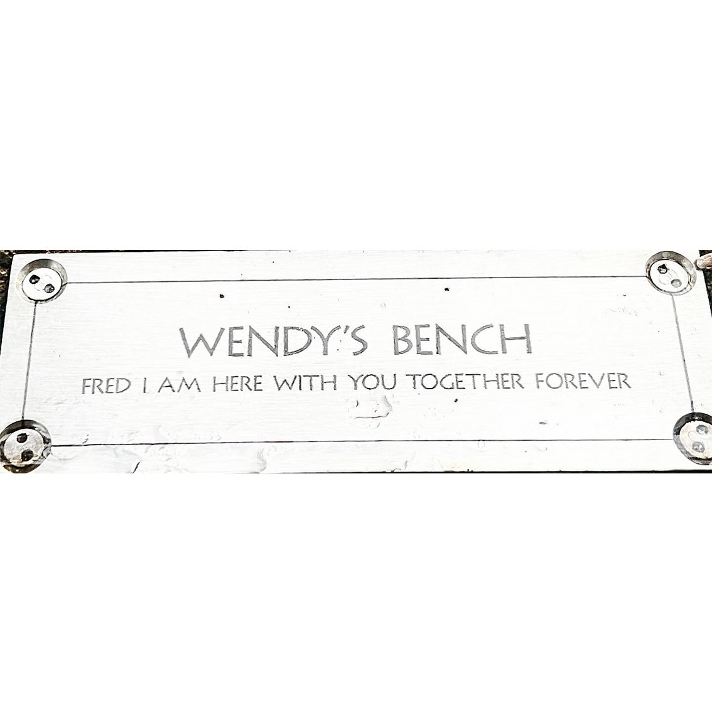
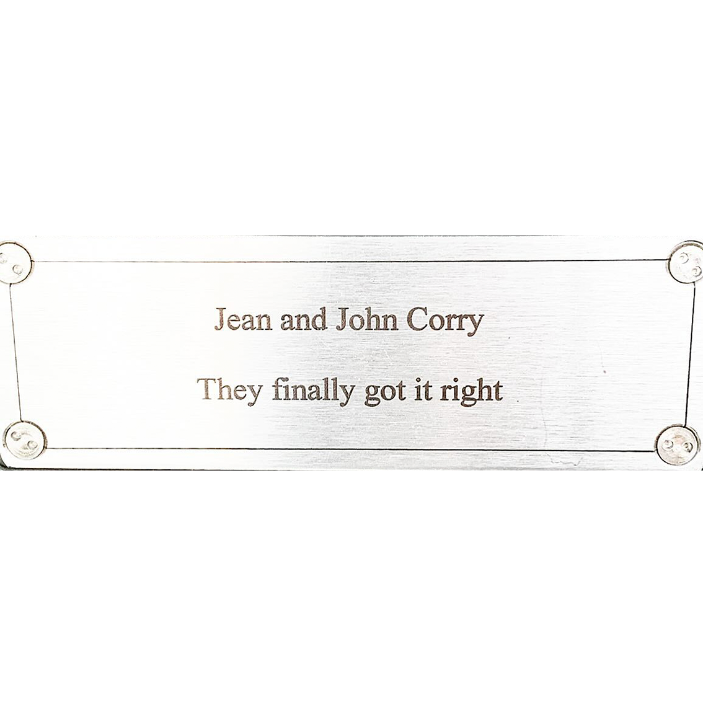
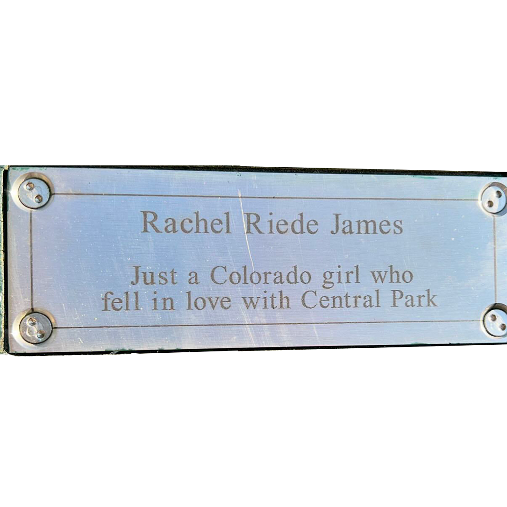
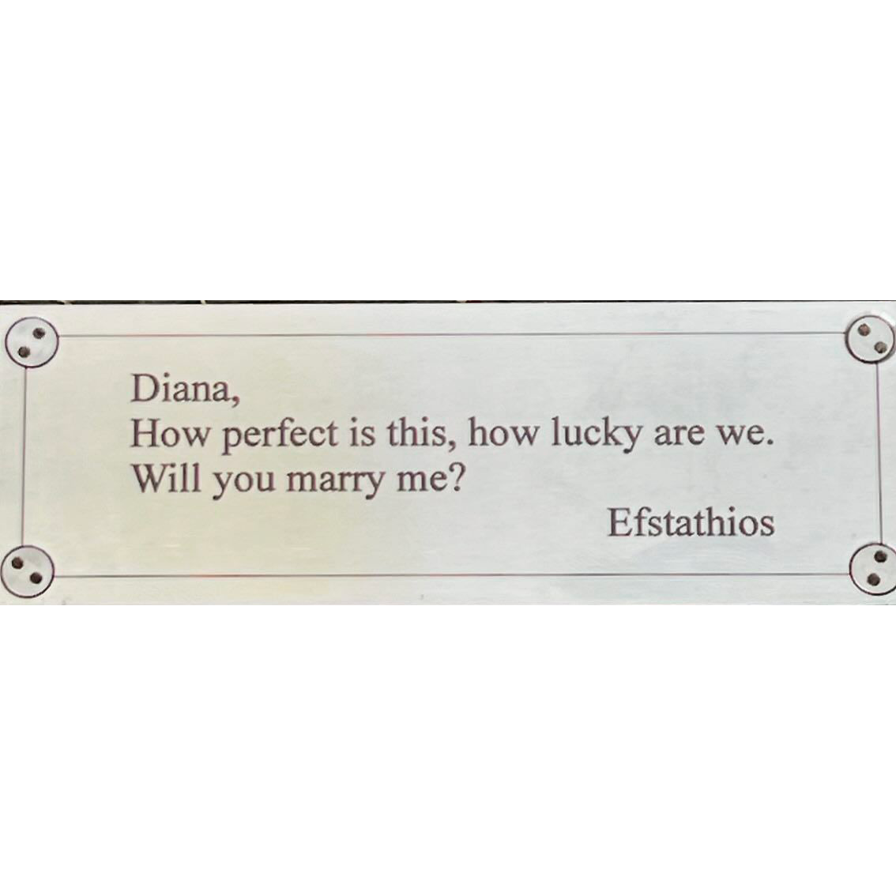

Amid the bustling energy of New York City, the benches of Central Park stand as quiet guardians of countless memories. Each one bears a small plaque, celebrating lives filled with laughter, love, and shared moments, reminding passersby of the personal stories that intertwine with the city's fast pace. These simple seats offer a pause, inviting reflection on the beauty of connections made and cherished in a world that often forgets to slow down. They are a testament to the idea that, even in a city that never sleeps, memories remain timeless.




In Memory of the Unforgotten